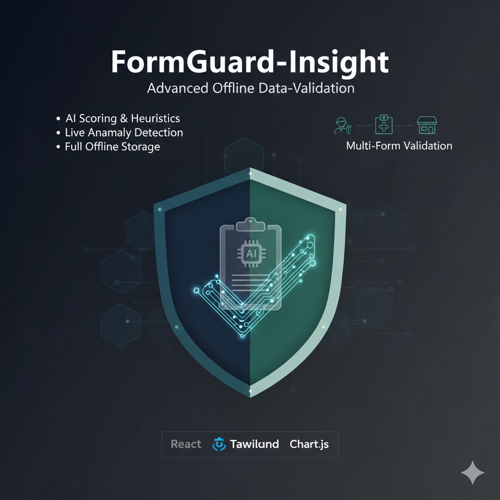
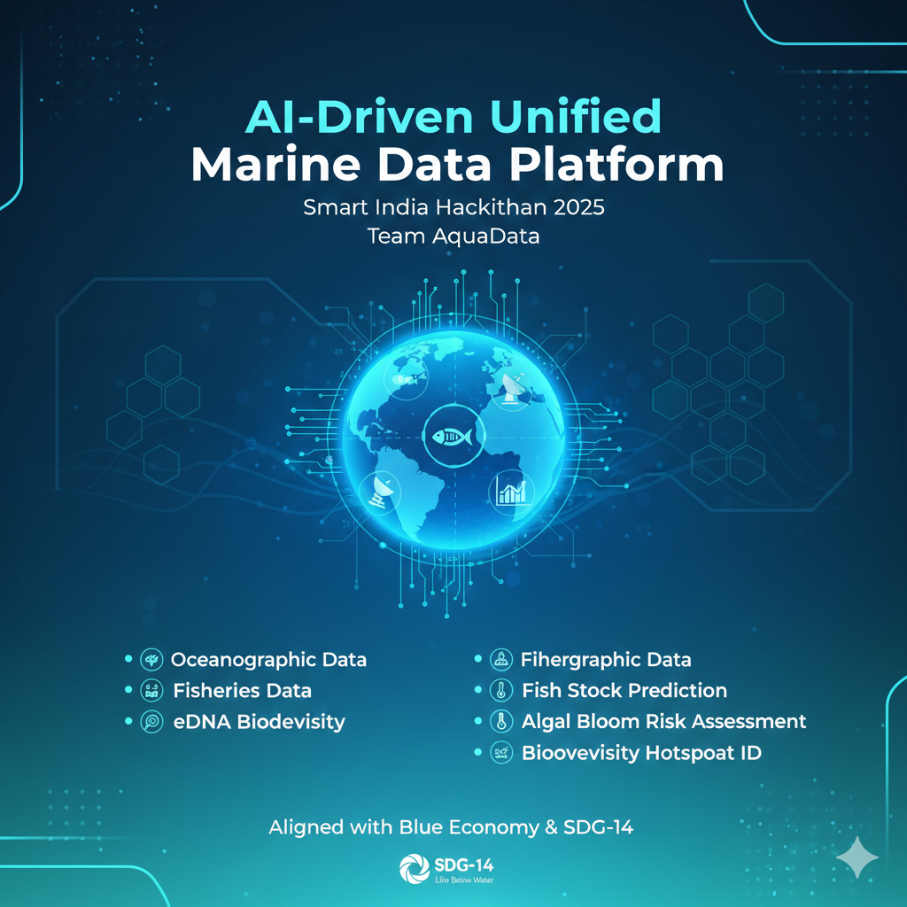
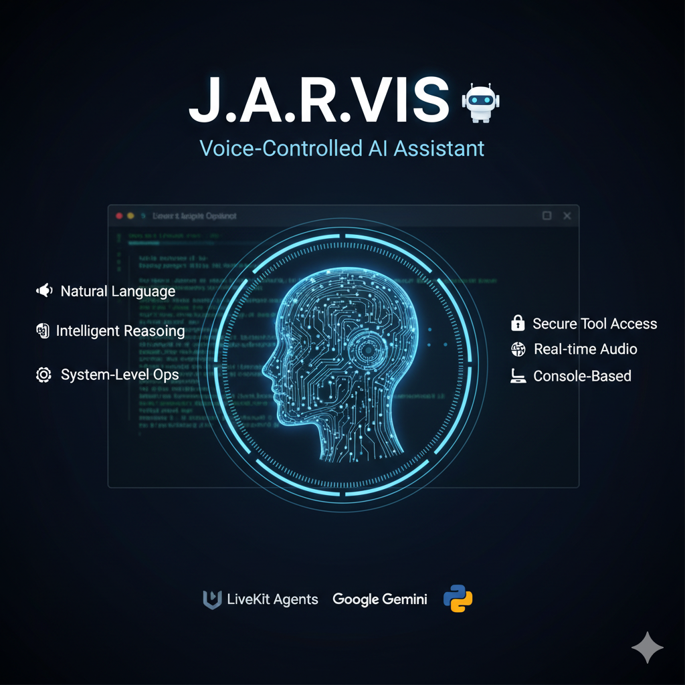
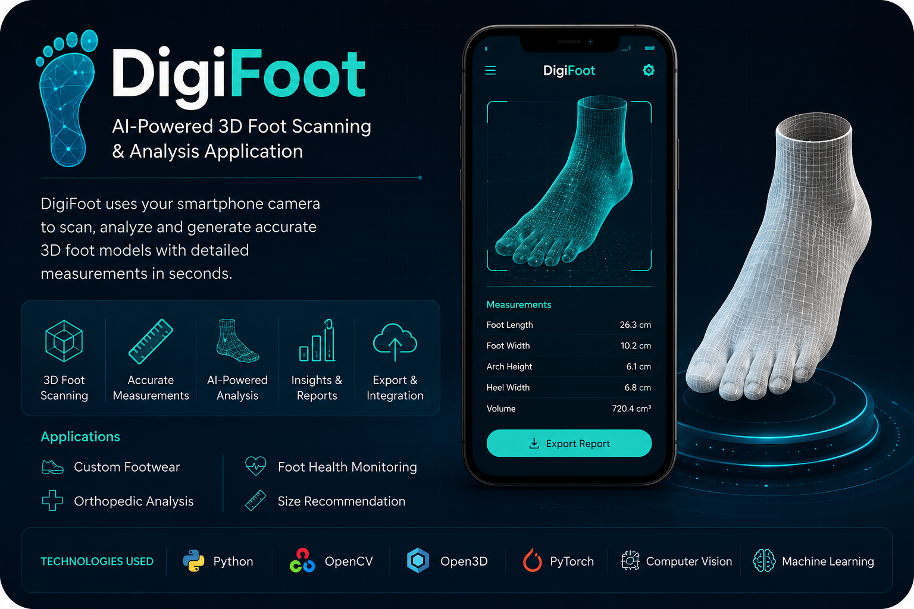

Hello, I'm Piyush Bipin Varule 👋
|
A passionate developer expanding skills and discovering new ways to innovate through code and AI.
DOWNLOAD CV
A passionate developer expanding skills and discovering new ways to innovate through code and AI.
DOWNLOAD CV
I am a B.Tech student specializing in Artificial Intelligence and Machine Learning at Pimpri Chinchwad University, driven by the goal of building intelligent systems that solve real-world challenges.
With a strong foundation in Python, JavaScript, and Multi-Agent Systems, I have successfully led and developed complex projects, including FormGuard-Insight—an AI-driven offline data validation system— and MediBuddy v2, a healthcare assistant focused on medication adherence.
Beyond engineering, I bring a unique perspective from my background as an SEO-focused Content Writer, allowing me to bridge the gap between complex technical logic and clear, engaging communication.
Holding certifications from Google, Meta, and Oracle, I am committed to continuous learning in Generative AI and Cloud Infrastructure, always seeking opportunities to contribute to the global AI ecosystem.
const developer = {
name: "Piyush",
role: "Computer Science Student",
passion: "Expanding skills and discovering new ways to innovate"
};

Built an advanced offline data-validation system that uses AI scoring, behavioral heuristics, and dynamic form rules to ensure high-integrity data entry in low-connectivity environments. Features include live anomaly detection, multi-form validation (Student/Hospital/Store), role-based review workflow, interactive analytics, export tools (CSV/JSON/PDF), , more... and full offline storage using IndexedDB. Designed with React, Tailwind, Framer Motion, and Chart.js to deliver a secure, smooth, and highly interactive user experience. MORE
Adherence Assistant Kaggle Project ,Designed an AI multi-agent system to improve medication adherence using intelligent task coordination. Implemented agents for reminder scheduling, user interaction, and adherence tracking. Utilized machine learning and rule-based logic to personalize medication alerts and monitor missed doses. , more... Analyzed user behavior data to generate adherence insights and reports. Focused on real-world healthcare use cases, improving reliability and user engagement. MORE

AI-Driven Unified Marine Data Platform Smart India Hackathon 2025 | Team aquadata Developed an AI-powered unified data platform integrating oceanographic data (temperature, salinity, satellite), fisheries data, and molecular biodiversity (eDNA) into a single system. Designed an end-to-end framework to transform raw marine data into actionable insights, including fish , more... stock prediction, algal bloom risk assessment, and biodiversity hotspot identification. Applied machine learning and data analytics to support real-time monitoring and predictive stock prediction, algal bloom risk assessment, and biodiversity hotspot identification. Applied machine learning and data analytics to support real-time monitoring and predictive decision-making for scientists, policymakers, and fisheries managers. Aligned the solution with Indias Blue Economy vision and SDG-14 (Life Below Water), focusing on sustainability, marine conservation, and data-driven governance. MORE

Developed JARVIS, a voice-controlled AI assistant capable of understanding natural language commands and executing system-level operations. The assistant runs in a console-based environment and uses LiveKit Agents for real-time audio processing and Google Gemini for intelligent reasoning. , more... Implemented a tool-based architecture to safely perform actions such as opening files, checking battery status, and retrieving information via web search, while maintaining strict control over system access. MORE

Developed DigiFoot, an AI-powered 3D foot scanning and analysis application that uses smartphone cameras to generate accurate digital foot models and measurements. The application performs real-time image capture and 3D reconstruction using Computer Vision, OpenCV, Open3D, and Machine Learning techniques for detailed foot analysis. Implemented features such as foot measurement extraction, 3D visualization, AI-based model refinement, and export support for applications in custom footwear, orthopedic analysis, and foot health monitoring. MORE
I'm currently open to new opportunities and collaborations. Whether you have a project in mind, want to discuss potential roles, or just want to connect, feel free to reach out!
piyushvarule15@gmail.com
Pune India